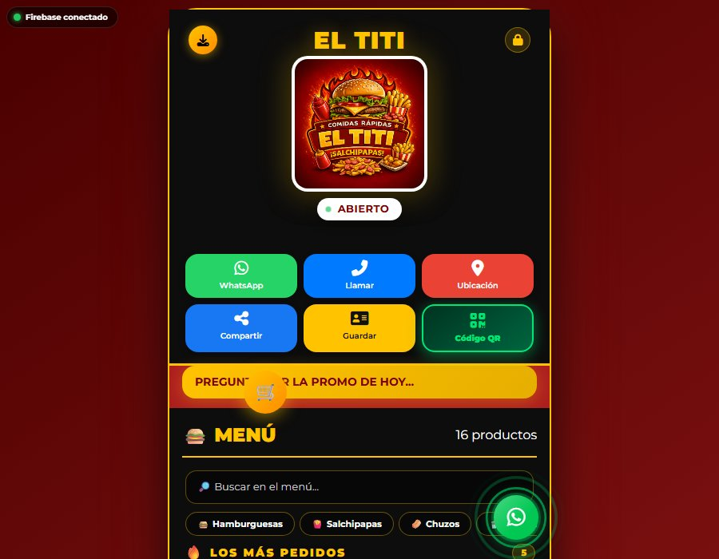

EL TITI — Restaurante de comidas rápidas
Alimentación · Comidas rápidas · Menú digital
Carta por categorías
Pedido por WhatsApp
App instalable (PWA)
El proyecto es una aplicación web de una sola página, estática y publicada en GitHub Pages, con Firebase Realtime Database como fuente de datos del menú. Incluye la vista pública del menú, un panel de pedidos para el negocio, un panel de administración con inicio de sesión y una página donde el cliente consulta el estado de su pedido con un código corto.
El menú está organizado en hamburguesas, salchipapas, chuzos, bebidas y adicionales, cada producto con su foto y la opción de marcarlo como agotado para que deje de ofrecerse.
Ver proyecto en vivo